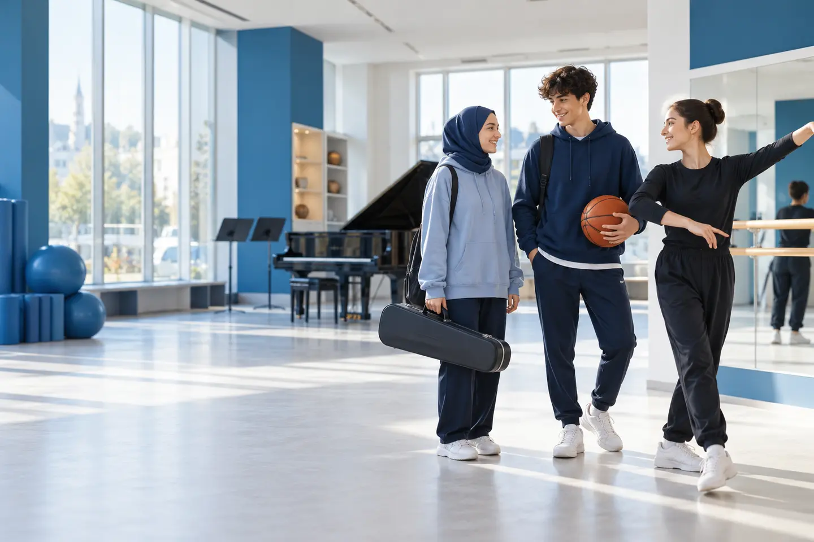
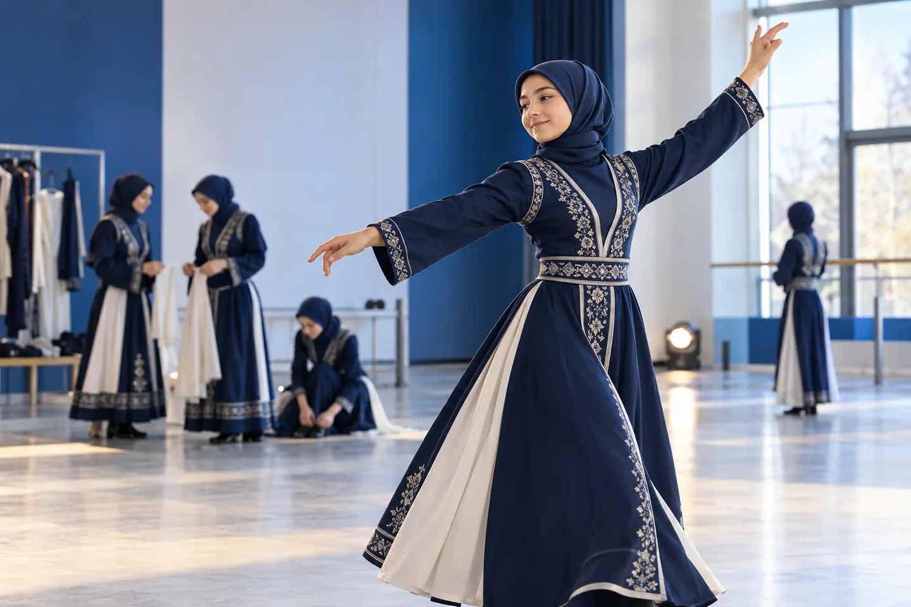
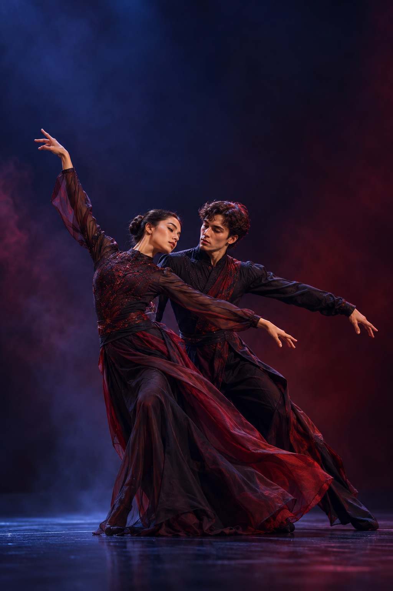
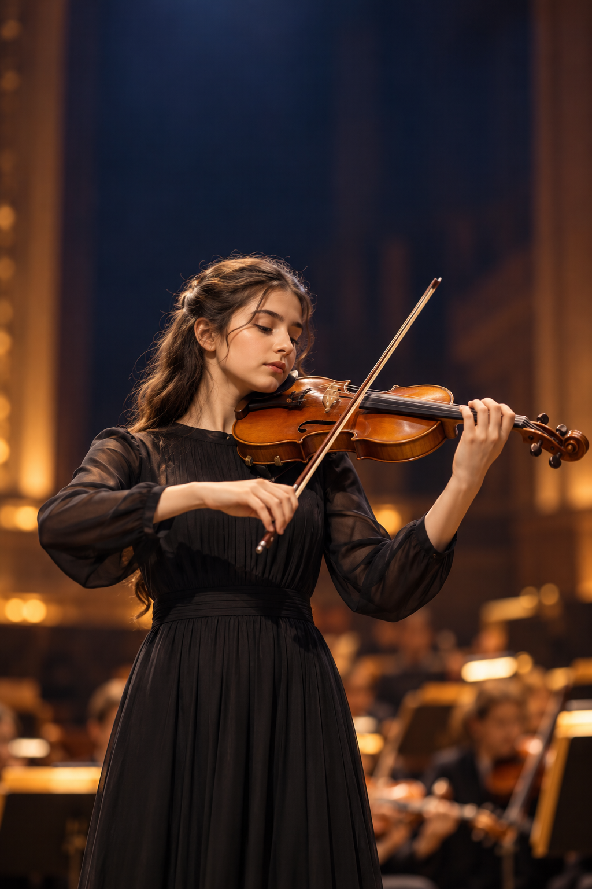
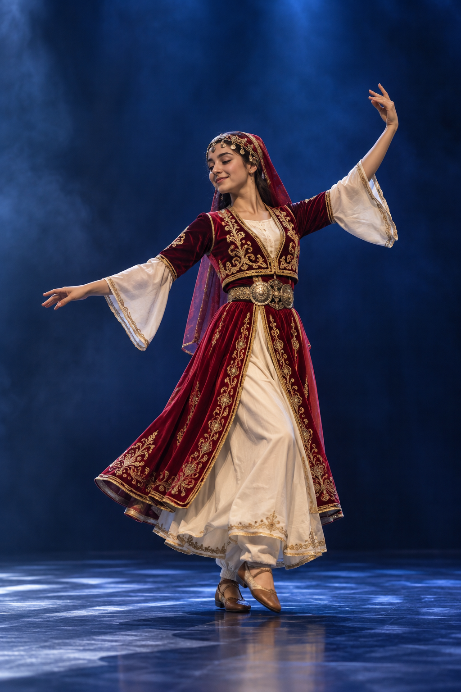

01
Kariyer Profilini Belirliyoruz
Öğrencinin yetenekleri, ilgi alanları, güçlü yönleri ve branş performansı doğrultusunda kişisel kariyer yönü oluşturulur.
Nova’da kariyer hazırlığı; öğrencinin yeteneğini yalnızca geliştirmekle kalmaz, onu eğitim, yükseköğretim ve profesyonel yaşamla buluşturan uzun vadeli bir yol haritasına dönüştürür.
Öğrencinin yetenekleri, ilgi alanları, güçlü yönleri ve branş performansı doğrultusunda kişisel kariyer yönü oluşturulur.

Konservatuvar, güzel sanatlar, spor bilimleri, profesyonel kulüpler ve ilgili kariyer alanlarına yönelik hedefler erken dönemde planlanır.
Öğrencinin sahne, müsabaka, proje, başarı ve gelişim kayıtları uzun vadeli bir profesyonel portfolyoya dönüştürülür.

Sahne, turnuva, festival, proje ve profesyonel uygulamalarla öğrencinin yalnızca eğitim alan değil, deneyim kazanan bir aday olması sağlanır.
Öğrenciler, yurt dışındaki konservatuvarların, sanat okullarının, spor akademilerinin ve üniversitelerin başvuru ve performans beklentilerine göre hazırlanır.

Yabancı dil, iletişim, sunum, portfolyo hazırlığı ve uluslararası başvuru becerileri kariyer planının bir parçası olarak ele alınır.

Akademisyenler, sanatçılar, sporcular, antrenörler ve kariyer danışmanları öğrencinin gelişimine ve hedeflerine birlikte yön verir.

Lise sonuna gelindiğinde öğrencinin yalnızca bir diploma sahibi olması değil, sanat veya spor alanında yükseköğretime, profesyonel kuruma veya gelir üretebilecek bir kariyer yoluna hazır hale gelmesi hedeflenir.